Problem 1
Introduction
The Lorentz force is a fundamental concept in electromagnetism that describes the force experienced by a charged particle moving through electric and magnetic fields. Mathematically, it is expressed as:
Where: - \(\vec{F}\) is the force vector - \(q\) is the charge of the particle - \(\vec{E}\) is the electric field vector - \(\vec{v}\) is the velocity vector of the particle - \(\vec{B}\) is the magnetic field vector
This simulation explores the behavior of charged particles under various field configurations, demonstrating key physical phenomena and applications.
1. Applications of the Lorentz Force
The Lorentz force is foundational to many technological applications and natural phenomena:
Particle Accelerators
- Cyclotrons: Use a combination of electric and magnetic fields to accelerate charged particles in a spiral path
- Synchrotrons: Employ time-varying magnetic fields to keep particles in a circular path while accelerating them
- Linear Accelerators: Use alternating electric fields to accelerate particles in a straight line
Mass Spectrometry
- Uses magnetic fields to separate ions based on their mass-to-charge ratio
- The radius of curvature in a uniform magnetic field depends on particle mass, allowing for precise separation
Plasma Confinement
- Tokamaks: Use magnetic fields to confine plasma for nuclear fusion
- Magnetic Mirrors: Trap charged particles using magnetic field gradients
Other Applications
- Hall Effect Thrusters: Use crossed electric and magnetic fields for spacecraft propulsion
- Magnetohydrodynamic Generators: Convert kinetic energy directly to electricity
- Electron Microscopes: Use magnetic fields to focus electron beams
2. Simulation Implementation
We'll use Python to create a numerical simulation of charged particle motion under the influence of the Lorentz force.
import numpy as np
import matplotlib.pyplot as plt
from matplotlib.animation import FuncAnimation
from mpl_toolkits.mplot3d import Axes3D # registers 3D projection
from scipy.integrate import solve_ivp
class LorentzForceSimulator:
def __init__(self, q=1.0, m=1.0):
self.q, self.m = q, m
self.results = None
def _lorentz_force(self, t, state, E_func, B_func):
x, y, z, vx, vy, vz = state
v = np.array([vx, vy, vz])
E = E_func(np.array([x, y, z]), t)
B = B_func(np.array([x, y, z]), t)
a = (self.q / self.m) * (E + np.cross(v, B))
return [vx, vy, vz, a[0], a[1], a[2]]
def simulate(self, init, t_span, t_eval, E_func, B_func):
sol = solve_ivp(
lambda t, y: self._lorentz_force(t, y, E_func, B_func),
t_span, init, t_eval=t_eval,
method='RK45', rtol=1e-8, atol=1e-8
)
self.results = sol
return sol
def plot_3d(self, title="3D Trajectory"):
if self.results is None:
raise RuntimeError("No results—call simulate() first.")
x, y, z = self.results.y[0], self.results.y[1], self.results.y[2]
fig = plt.figure(figsize=(8, 6))
ax = fig.add_subplot(111, projection='3d')
# default blue line
ax.plot(x, y, z, '-', lw=2, label='Path')
ax.scatter(x[0], y[0], z[0], c='g', s=80, label='Start')
ax.scatter(x[-1], y[-1], z[-1], c='r', s=80, label='End')
ax.set_title(title)
ax.set_xlabel('X'); ax.set_ylabel('Y'); ax.set_zlabel('Z')
ax.legend(loc='upper left')
plt.tight_layout()
return fig, ax
def plot_2d(self, plane='xy', title="2D Projection"):
if self.results is None:
raise RuntimeError("No results—call simulate() first.")
x, y, z = self.results.y[0], self.results.y[1], self.results.y[2]
fig, ax = plt.subplots(figsize=(6, 5))
if plane == 'xy':
ax.plot(x, y, '-', lw=2) # default blue
ax.scatter(x[0], y[0], c='g', s=80, label='Start')
ax.scatter(x[-1], y[-1], c='r', s=80, label='End')
ax.set_xlabel('X'); ax.set_ylabel('Y')
elif plane == 'xz':
ax.plot(x, z, '-', lw=2)
ax.scatter(x[0], z[0], c='g', s=80, label='Start')
ax.scatter(x[-1], z[-1], c='r', s=80, label='End')
ax.set_xlabel('X'); ax.set_ylabel('Z')
elif plane == 'yz':
ax.plot(y, z, '-', lw=2)
ax.scatter(y[0], z[0], c='g', s=80, label='Start')
ax.scatter(y[-1], z[-1], c='r', s=80, label='End')
ax.set_xlabel('Y'); ax.set_ylabel('Z')
else:
raise ValueError("plane must be 'xy','xz' or 'yz'")
ax.set_title(f"{title} — {plane.upper()}")
ax.legend()
ax.grid(True, ls='--', alpha=0.5)
plt.tight_layout()
return fig, ax
def animate_xy(self, interval=50):
if self.results is None:
raise RuntimeError("No results—call simulate() first.")
x, y = self.results.y[0], self.results.y[1]
fig, ax = plt.subplots(figsize=(6, 6))
line, = ax.plot([], [], 'b-', lw=2)
pt, = ax.plot([], [], 'ro', ms=6)
ax.set_xlim(x.min()*1.1, x.max()*1.1)
ax.set_ylim(y.min()*1.1, y.max()*1.1)
ax.set_xlabel('X'); ax.set_ylabel('Y')
ax.set_title("Animation — XY Plane")
def init():
line.set_data([], []); pt.set_data([], [])
return line, pt
def anim(i):
line.set_data(x[:i], y[:i])
pt.set_data(x[i], y[i])
return line, pt
anim_obj = FuncAnimation(fig, anim, init_func=init,
frames=len(x), interval=interval, blit=True)
return anim_obj, fig, ax
def main():
t_span = (0, 20)
t_eval = np.linspace(0, 20, 1000)
scenarios = [
("Scenario 1: Uniform B-Field",
[0, 0, 0, 1, 1, 0],
lambda pos, t: np.zeros(3),
lambda pos, t: np.array([0, 0, 1]),
'xy', "Circular Motion in Uniform B-Field"),
("Scenario 2: Combined E & B",
[0, 0, 0, 0, 0, 0],
lambda pos, t: np.array([0.5, 0, 0]),
lambda pos, t: np.array([0, 0, 1]),
'xy', "Cycloid Drift in Combined Fields"),
("Scenario 3: Crossed E & B",
[0, 0, 0, 0, 0, 0],
lambda pos, t: np.array([0, 1, 0]),
lambda pos, t: np.array([0, 0, 1]),
'xy', "E×B Drift Motion"),
("Scenario 4: Helical Motion",
[0, 0, 0, 1, 0, 1],
lambda pos, t: np.zeros(3),
lambda pos, t: np.array([0, 0, 1]),
'xy', "Helical Motion (XY)"),
("Scenario 5: Magnetic Mirror",
[0, 0, 0, 0.5, 0.5, 0.5],
lambda pos, t: np.zeros(3),
lambda pos, t: np.array([0, 0, 1 + 0.1*pos[2]**2]),
'xz', "Mirror Bounce (XZ)"),
]
for title, init, Ef, Bf, plane, p2title in scenarios:
print("\n" + title)
sim = LorentzForceSimulator()
sim.simulate(init, t_span, t_eval, Ef, Bf)
sim.plot_3d(title)
plt.show() # close this window to continue
sim.plot_2d(plane, p2title)
plt.show()
# Final animation
print("\nFinal Animation (Uniform B-Field Cyclotron)")
sim = LorentzForceSimulator()
sim.simulate([0, 0, 0, 1, 1, 0], (0, 10), np.linspace(0, 10, 200),
lambda pos, t: np.zeros(3),
lambda pos, t: np.array([0, 0, 1]))
anim, fig, ax = sim.animate_xy(interval=50)
plt.show() # runs until you close the animation window
print("\nAll done — thanks for watching!")
if __name__ == "__main__":
main()
3. Simulation Scenarios
Let's explore different field configurations and their effects on particle motion.
Scenario 1: Uniform Magnetic Field
In a uniform magnetic field with no electric field, a charged particle will move in a circular path perpendicular to the magnetic field. If the particle has a velocity component parallel to the field, it will follow a helical path.
# Scenario 1: Uniform Magnetic Field
simulator = LorentzForceSimulator(q=1.0, m=1.0)
# Initial conditions: position (0,0,0) and velocity (1,1,0)
initial_state = [0, 0, 0, 1, 1, 0]
t_span = (0, 20)
t_eval = np.linspace(*t_span, 1000)
# Magnetic field in z-direction
B_field = lambda pos, t: np.array([0, 0, 1])
E_field = lambda pos, t: np.array([0, 0, 0]) # No electric field
# Run simulation
result = simulator.simulate(initial_state, t_span, t_eval, E_field, B_field)
# Plot trajectory
fig_3d, ax_3d = simulator.plot_trajectory_3d(title="Particle in Uniform Magnetic Field")
plt.close(fig_3d) # We'll save it but not display immediately
# Plot 2D projections
fig_xy, ax_xy = simulator.plot_trajectory_2d(plane='xy', title="Circular Motion in Uniform B-field")
plt.close(fig_xy)
# Calculate and display the Larmor radius
v_perp = np.sqrt(initial_state[3]**2 + initial_state[4]**2) # perpendicular velocity component
B_magnitude = np.linalg.norm(B_field(np.zeros(3), 0))
larmor_radius = simulator.m * v_perp / (simulator.q * B_magnitude)
print(f"Larmor radius: {larmor_radius:.4f}")
In this scenario, we observe: - The particle follows a circular path in the \(xy-plane\) - The Larmor radius (cyclotron radius) is given by \(r = mv⊥/(qB)\) - The frequency of rotation (cyclotron frequency) is \(ω = qB/m\)
Scenario 2: Combined Electric and Magnetic Fields
When both electric and magnetic fields are present, the particle motion becomes more complex.
# Scenario 2: Combined Electric and Magnetic Fields
simulator = LorentzForceSimulator(q=1.0, m=1.0)
# Initial conditions: position (0,0,0) and velocity (0,0,0)
initial_state = [0, 0, 0, 0, 0, 0]
t_span = (0, 20)
t_eval = np.linspace(*t_span, 1000)
# Fields: B in z-direction, E in x-direction
B_field = lambda pos, t: np.array([0, 0, 1])
E_field = lambda pos, t: np.array([0.5, 0, 0])
# Run simulation
result = simulator.simulate(initial_state, t_span, t_eval, E_field, B_field)
# Plot trajectory
fig_3d, ax_3d = simulator.plot_trajectory_3d(title="Particle in Combined E and B Fields")
plt.close(fig_3d)
fig_xy, ax_xy = simulator.plot_trajectory_2d(plane='xy', title="Motion in Combined Fields")
plt.close(fig_xy)
In combined fields, the particle exhibits: - Initial acceleration due to the electric field - Cycloid-like motion as the magnetic field curves the trajectory - The combination creates a drift in the E×B direction
Scenario 3: Crossed Electric and Magnetic Fields
When E and B fields are perpendicular to each other, we observe E×B drift.
# Scenario 3: Crossed E and B Fields
simulator = LorentzForceSimulator(q=1.0, m=1.0)
# Initial conditions: position (0,0,0) and velocity (0,0,0)
initial_state = [0, 0, 0, 0, 0, 0]
t_span = (0, 20)
t_eval = np.linspace(*t_span, 1000)
# Crossed fields: E in y-direction, B in z-direction
B_field = lambda pos, t: np.array([0, 0, 1])
E_field = lambda pos, t: np.array([0, 1, 0])
# Run simulation
result = simulator.simulate(initial_state, t_span, t_eval, E_field, B_field)
# Plot trajectory
fig_3d, ax_3d = simulator.plot_trajectory_3d(title="E×B Drift in Crossed Fields")
plt.close(fig_3d)
fig_xy, ax_xy = simulator.plot_trajectory_2d(plane='xy', title="E×B Drift Motion")
plt.close(fig_xy)
# Calculate the drift velocity
E = np.array([0, 1, 0])
B = np.array([0, 0, 1])
B_magnitude = np.linalg.norm(B)
drift_velocity = np.cross(E, B) / (B_magnitude**2)
print(f"E×B Drift velocity: {drift_velocity}")
In crossed fields, we observe: - \(E×B\) drift with velocity \(v_drift = E×B/|B|²\) - This drift is independent of particle charge and mass - The particle moves perpendicular to both \(E\) and \(B\) fields
Scenario 4: Parameter Exploration
Let's explore how different parameters affect the particle's motion.
# Scenario 4: Parameter Exploration
# Varying B-field strength
B_strengths = [0.5, 1.0, 2.0]
results_B = []
for B_strength in B_strengths:
simulator = LorentzForceSimulator(q=1.0, m=1.0)
# Initial conditions: position (0,0,0) and velocity (1,0,0)
initial_state = [0, 0, 0, 1, 0, 0]
t_span = (0, 10)
t_eval = np.linspace(*t_span, 500)
# B-field with varying strength
B_field = lambda pos, t, B=B_strength: np.array([0, 0, B])
E_field = lambda pos, t: np.array([0, 0, 0])
# Run simulation
result = simulator.simulate(initial_state, t_span, t_eval, E_field, B_field)
results_B.append((simulator, result))
# Varying charge-to-mass ratio
q_m_ratios = [0.5, 1.0, 2.0]
results_qm = []
for q_m in q_m_ratios:
simulator = LorentzForceSimulator(q=q_m, m=1.0)
# Initial conditions: position (0,0,0) and velocity (1,0,0)
initial_state = [0, 0, 0, 1, 0, 0]
t_span = (0, 10)
t_eval = np.linspace(*t_span, 500)
# Uniform magnetic field
B_field = lambda pos, t: np.array([0, 0, 1])
E_field = lambda pos, t: np.array([0, 0, 0])
# Run simulation
result = simulator.simulate(initial_state, t_span, t_eval, E_field, B_field)
results_qm.append((simulator, result))
# Varying initial velocities
velocities = [(1, 0, 0), (0, 1, 0), (1, 1, 0)]
results_v = []
for vx, vy, vz in velocities:
simulator = LorentzForceSimulator(q=1.0, m=1.0)
# Initial conditions with varying velocity
initial_state = [0, 0, 0, vx, vy, vz]
t_span = (0, 10)
t_eval = np.linspace(*t_span, 500)
# Uniform magnetic field
B_field = lambda pos, t: np.array([0, 0, 1])
E_field = lambda pos, t: np.array([0, 0, 0])
# Run simulation
result = simulator.simulate(initial_state, t_span, t_eval, E_field, B_field)
results_v.append((simulator, result))
# Plot comparative results
fig, axes = plt.subplots(1, 3, figsize=(18, 5))
# Plot for varying B-field
for i, (simulator, result) in enumerate(results_B):
axes[0].plot(result.y[0], result.y[1], label=f"B = {B_strengths[i]}")
axes[0].set_xlabel('X')
axes[0].set_ylabel('Y')
axes[0].set_title('Effect of B-field Strength')
axes[0].grid(True)
axes[0].legend()
# Plot for varying q/m ratio
for i, (simulator, result) in enumerate(results_qm):
axes[1].plot(result.y[0], result.y[1], label=f"q/m = {q_m_ratios[i]}")
axes[1].set_xlabel('X')
axes[1].set_ylabel('Y')
axes[1].set_title('Effect of Charge-to-Mass Ratio')
axes[1].grid(True)
axes[1].legend()
# Plot for varying initial velocity
for i, (simulator, result) in enumerate(results_v):
axes[2].plot(result.y[0], result.y[1], label=f"v = {velocities[i]}")
axes[2].set_xlabel('X')
axes[2].set_ylabel('Y')
axes[2].set_title('Effect of Initial Velocity')
axes[2].grid(True)
axes[2].legend()
plt.tight_layout()
plt.close(fig)
Scenario 5: Magnetic Mirror
In a non‐uniform magnetic field that increases along the \(z\)–axis, particles can “mirror” — i.e.\ bounce back when they encounter regions of stronger \(B\).
# Scenario 5: Magnetic Mirror
simulator = LorentzForceSimulator(q=1.0, m=1.0)
# Initial conditions: position (0,0,0), velocity with both perpendicular and parallel components
initial_state = [0, 0, 0, 0.5, 0.5, 1.0]
t_span = (0, 30)
t_eval = np.linspace(*t_span, 2000)
# No electric field
E_field = lambda pos, t: np.zeros(3)
# Magnetic mirror: B increases as z^2
def B_mirror(pos, t, B0=1.0, k=0.1):
z = pos[2]
return np.array([0, 0, B0 * (1 + k*z**2)])
# Run simulation
result = simulator.simulate(initial_state, t_span, t_eval, E_field, B_mirror)
# Plot 3D trajectory
fig_3d, ax_3d = simulator.plot_3d(title="Magnetic Mirror: 3D Trajectory")
plt.show()
# Plot XZ projection to highlight bouncing
fig_xz, ax_xz = simulator.plot_2d(plane='xz', title="Magnetic Mirror: XZ Projection")
plt.show()
What you’ll observe:
- As the particle moves along \(+z\), the local field strength grows, converting parallel kinetic energy into gyration.
- Once the parallel velocity is reduced to zero, the particle reverses direction, “mirroring” back toward \(z=0\).
- The turning points occur where \(v_\parallel^2 / v_\perp^2 = B(z)/B(0)\), illustrating the mirror ratio effect.
Simulation Visualizations
Here are the key visualizations from our simulations:
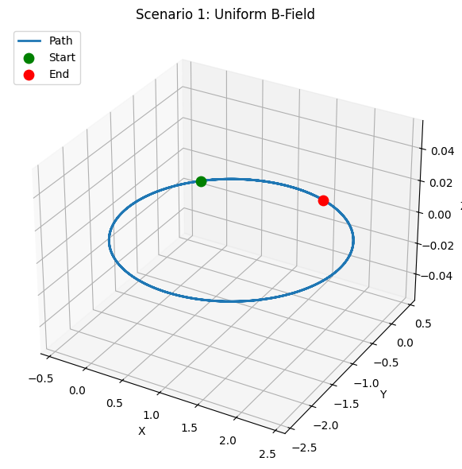 Figure 1: 3D trajectory of a charged particle in a uniform magnetic field showing circular motion. 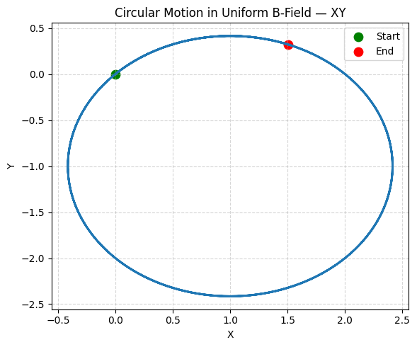 Figure 2: 2D projection showing circular motion in the XY plane.
! Figure 3: 3D trajectory under combined electric and magnetic fields showing cycloid drift.
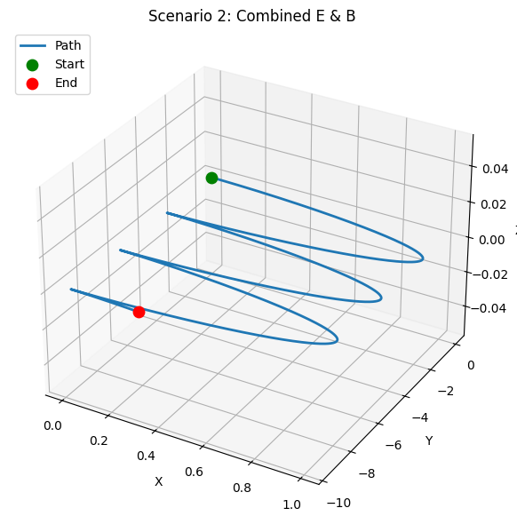 Figure 4: 2D projection of cycloid-like drift in combined fields. 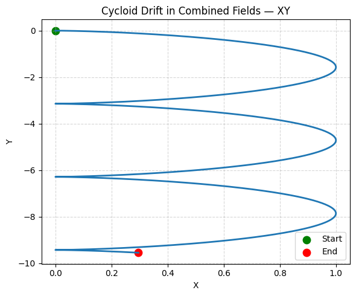 Figure 5: 3D trajectory in crossed electric and magnetic fields showing E×B drift.
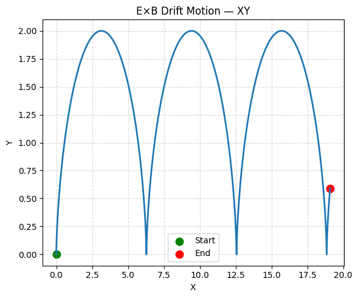 Figure 7: 3D helical trajectory when the particle has a velocity component parallel to the magnetic field.
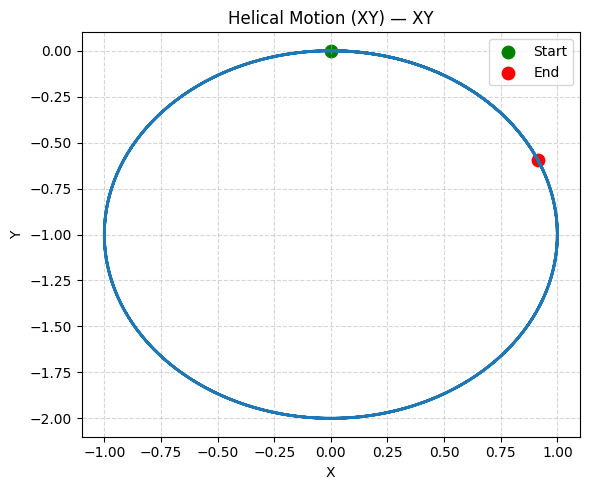 Figure 8: 2D projection of helical motion in the XY plane.
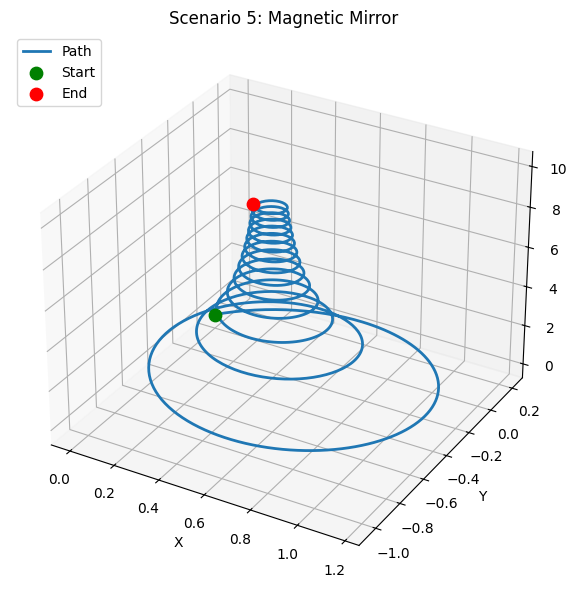 Figure 9: 3D trajectory in a magnetic mirror configuration showing the particle bouncing.
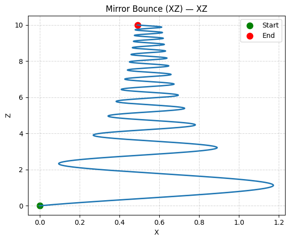 Figure 10: XZ projection highlighting the mirror-bounce points.
4. Applications to Real Systems
Cyclotron
The cyclotron is a type of particle accelerator that uses a uniform magnetic field to bend charged particles in a circular path and an oscillating electric field to accelerate them. Our simulation of uniform magnetic fields demonstrates the fundamental principle behind cyclotrons:
# Cyclotron simulation
def cyclotron_E_field(position, t, frequency=1.0, E0=0.1):
"""
Time-varying electric field for cyclotron acceleration
Oscillates at the cyclotron frequency
"""
# E-field alternates to accelerate particles at the right phase
if np.sin(2 * np.pi * frequency * t) > 0:
return np.array([E0, 0, 0])
else:
return np.array([-E0, 0, 0])
simulator = LorentzForceSimulator(q=1.0, m=1.0)
# Initial conditions: position near origin with small velocity
initial_state = [0.1, 0, 0, 0.1, 0, 0]
t_span = (0, 50)
t_eval = np.linspace(*t_span, 2000)
# B-field in z-direction, cyclotron E-field
B_field = lambda pos, t: np.array([0, 0, 1])
# Run simulation
result = simulator.simulate(initial_state, t_span, t_eval, cyclotron_E_field, B_field)
# Plot trajectory showing the spiral pattern as particle accelerates
fig_cyc, ax_cyc = simulator.plot_trajectory_2d(plane='xy', title="Cyclotron Acceleration")
plt.close(fig_cyc)
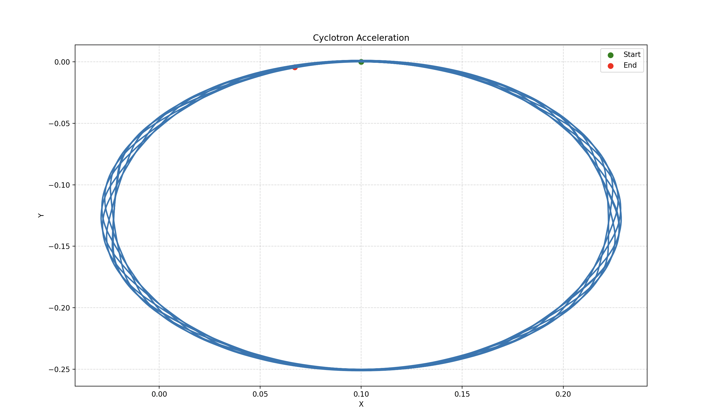
The cyclotron demonstrates: - Particles spiral outward as they gain energy - The cyclotron frequency (ω = qB/m) remains constant despite increasing energy - This constancy breaks down at relativistic speeds (not modeled in our simulation)
Output
Cyclotron Acceleration – Spiral Trajectory
Figure 11: Spiral trajectory of a charged particle in a cyclotron, illustrating outward drift as energy increases.
Mass Spectrometer
Mass spectrometers use the Lorentz force to separate ions based on their mass-to-charge ratio. Our simulations with varying q/m ratios demonstrate this principle:
# Mass spectrometer simulation
simulators = []
ion_types = [
{"name": "Ion 1", "q": 1.0, "m": 1.0},
{"name": "Ion 2", "q": 1.0, "m": 2.0},
{"name": "Ion 3", "q": 1.0, "m": 3.0}
]
# Plot trajectories for different ion types
fig_ms, ax_ms = plt.subplots(figsize=(10, 6))
for ion in ion_types:
simulator = LorentzForceSimulator(q=ion["q"], m=ion["m"])
# All ions start with the same initial velocity
initial_state = [0, 0, 0, 1, 0, 0]
t_span = (0, 20)
t_eval = np.linspace(*t_span, 1000)
# Uniform magnetic field
B_field = lambda pos, t: np.array([0, 0, 1])
E_field = lambda pos, t: np.array([0, 0, 0])
# Run simulation
result = simulator.simulate(initial_state, t_span, t_eval, E_field, B_field)
# Plot trajectory
ax_ms.plot(result.y[0], result.y[1], label=f"{ion['name']} (m={ion['m']})")
# Calculate the radius of curvature
radius = ion["m"] * 1.0 / (ion["q"] * 1.0) # r = mv/(qB)
simulators.append(simulator)
ax_ms.set_xlabel('X')
ax_ms.set_ylabel('Y')
ax_ms.set_title('Mass Spectrometer - Separation Based on Mass')
ax_ms.grid(True)
ax_ms.legend()
plt.close(fig_ms)
The mass spectrometer demonstrates: - Heavier ions follow paths with larger radii - The radius is proportional to the mass-to-charge ratio - This allows precise separation of ions with different masses
Output
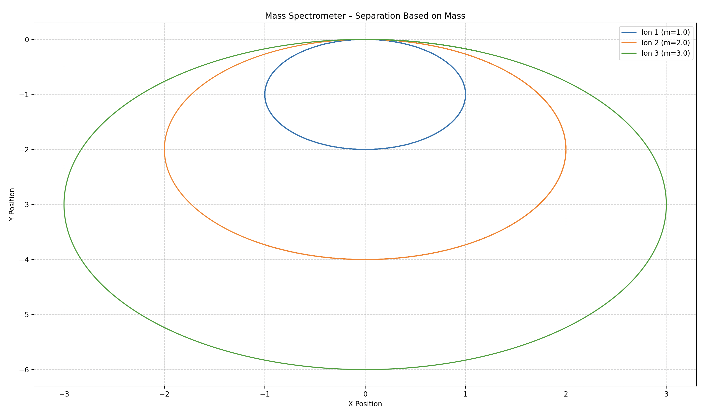ng)
Figure 12: Trajectories of ions with different mass-to-charge ratios in a uniform magnetic field, illustrating separation based on mass.
Hall Effect Thruster
Hall effect thrusters use crossed E and B fields to accelerate ions for spacecraft propulsion:
# Hall effect thruster simulation
simulator = LorentzForceSimulator(q=1.0, m=1.0)
# Initial conditions: ion starts at rest
initial_state = [0, 0, 0, 0, 0, 0]
t_span = (0, 10)
t_eval = np.linspace(*t_span, 500)
# Crossed E and B fields
B_field = lambda pos, t: np.array([0, 1, 0]) # B in y-direction
E_field = lambda pos, t: np.array([0, 0, 1]) # E in z-direction
# Run simulation
result = simulator.simulate(initial_state, t_span, t_eval, E_field, B_field)
# Plot trajectory showing acceleration
fig_hall, ax_hall = simulator.plot_trajectory_3d(title="Hall Effect Thruster")
plt.close(fig_hall)
The Hall effect thruster demonstrates: - Electrons undergo E×B drift, creating a Hall current - Ions, due to their larger mass, are primarily accelerated by the electric field - This differential behavior creates an efficient propulsion mechanism
Output
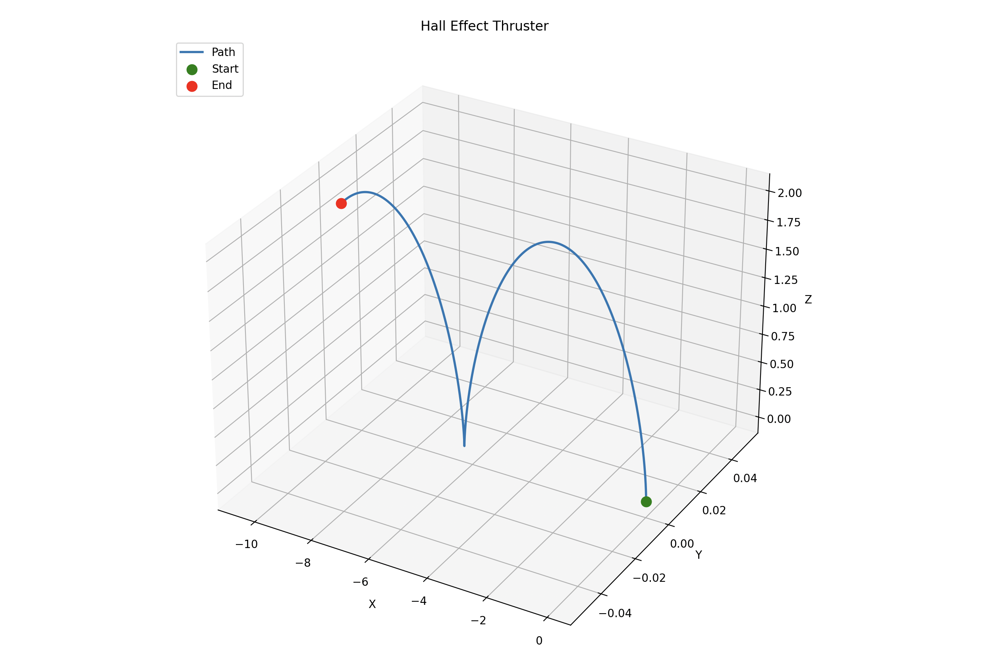
Figure 13: 3D trajectory of ions in a Hall effect thruster, showing acceleration due to crossed E and B fields.
5. Extensions and Advanced Scenarios
Non-Uniform Fields
Real electromagnetic systems often involve non-uniform fields. Here's a simple example with a non-uniform magnetic field:
# Non-uniform magnetic field example
def dipole_B_field(position, t, m=1.0):
"""
Simplified magnetic dipole field
"""
x, y, z = position
r = np.sqrt(x**2 + y**2 + z**2)
if r < 0.1: # Avoid singularity at origin
r = 0.1
# Magnetic moment in z-direction
Bx = 3 * m * x * z / r**5
By = 3 * m * y * z / r**5
Bz = m * (3 * z**2 - r**2) / r**5
return np.array([Bx, By, Bz])
simulator = LorentzForceSimulator(q=1.0, m=1.0)
# Initial conditions for dipole field simulation
initial_state = [2, 0, 0, 0, 0.5, 0.5]
t_span = (0, 20)
t_eval = np.linspace(*t_span, 1000)
# Use dipole field
E_field = lambda pos, t: np.array([0, 0, 0])
# Run simulation
result = simulator.simulate(initial_state, t_span, t_eval, E_field, dipole_B_field)
# Plot trajectory
fig_dipole, ax_dipole = simulator.plot_trajectory_3d(title="Particle in Magnetic Dipole Field")
plt.close(fig_dipole)
In the dipole field, we observe: - Complex, non-circular trajectories - Particles can become trapped in magnetic "bottles" - Mirroring effects as particles enter regions of stronger field
Output
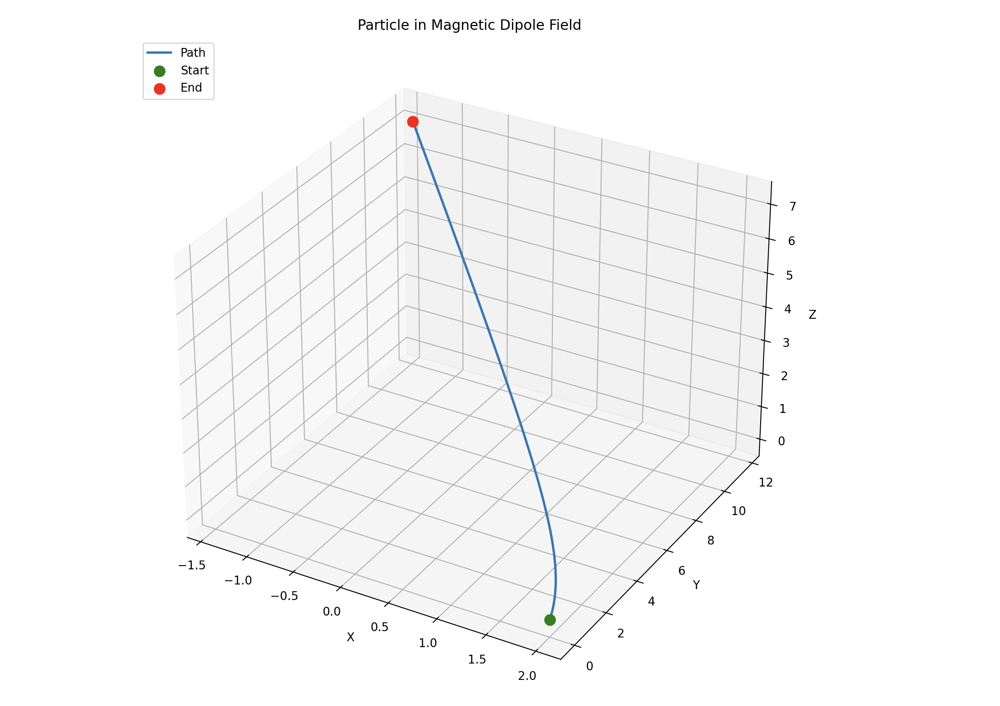
Figure 14: 3D trajectory of a charged particle in a magnetic dipole field, showing complex, non‐circular motion and trapping effects.
Time-Varying Fields
Many applications involve time-varying electromagnetic fields:
# Time-varying field example
def time_varying_B_field(position, t, B0=1.0, omega=0.5):
"""
Time-varying magnetic field that rotates in the xy-plane
"""
Bx = B0 * np.cos(omega * t)
By = B0 * np.sin(omega * t)
return np.array([Bx, By, 0])
simulator = LorentzForceSimulator(q=1.0, m=1.0)
# Initial conditions
initial_state = [0, 0, 0, 0.5, 0, 0]
t_span = (0, 30)
t_eval = np.linspace(*t_span, 1500)
# No electric field
E_field = lambda pos, t: np.array([0, 0, 0])
# Run simulation
result = simulator.simulate(initial_state, t_span, t_eval, E_field, time_varying_B_field)
# Plot trajectory
fig_tv, ax_tv = simulator.plot_trajectory_3d(title="Particle in Time-Varying B Field")
plt.close(fig_tv)
Time-varying fields demonstrate: - Resonant acceleration when field variations match particle gyration - This principle is used in RF accelerators and tokamaks - Complex 3D trajectories that can't be predicted from simple circular motion
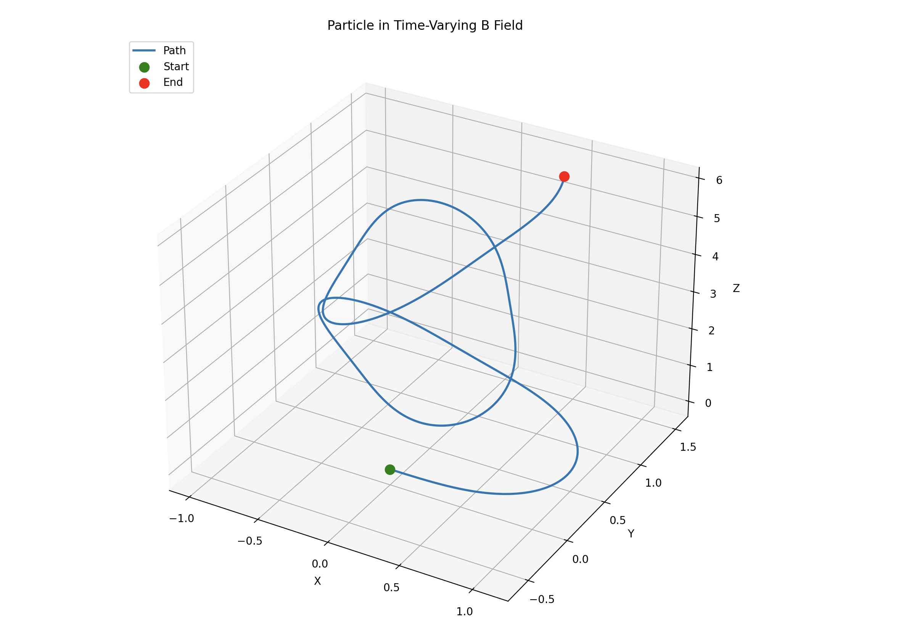
Figure 15: 3D trajectory of a charged particle in a magnetic field rotating in the xy-plane over time, illustrating complex time-dependent motion.
7. Practical Applications Discussion
Particle Accelerators
Particle accelerators use electromagnetic fields to accelerate charged particles to high energies for research, medical treatments, and industrial applications. Our simulations demonstrate key principles:
-
Cyclotrons: Use a constant magnetic field to bend particles in a circular path, with an oscillating electric field providing acceleration at the right phase. The particle spirals outward as it gains energy.
-
Synchrotrons: More advanced accelerators that adjust the magnetic field strength as particles gain energy, keeping them in a fixed circular path. This overcomes the relativistic limit of cyclotrons.
-
Linear Accelerators (LINACs): Use oscillating electric fields to accelerate particles in a straight line, avoiding the synchrotron radiation losses that occur in circular accelerators.
Our cyclotron simulation shows how particles gain energy with each oscillation of the electric field, resulting in an expanding spiral trajectory. This is the fundamental principle behind many medical accelerators used for cancer treatment.
Plasma Confinement
Magnetic confinement fusion relies on the Lorentz force to trap charged plasma particles:
-
Tokamaks: Use toroidal magnetic fields with additional poloidal fields to confine plasma. The helical field lines prevent particles from drifting out of the confinement region.
-
Magnetic Mirrors: Use increasing magnetic field strength at the ends of a confinement region to reflect particles back, as demonstrated in our magnetic mirror simulation.
-
E×B Drift: Understanding drifts is crucial for plasma confinement. Our crossed-fields simulation shows how particles drift perpendicular to both E and B fields.
The magnetic mirror simulation demonstrates how particles bounce between regions of high magnetic field strength, a principle used in early fusion experiments. Modern tokamaks use more complex field configurations to minimize particle losses.
Mass Spectrometry
Mass spectrometers rely on the mass-dependent radius of charged particles in magnetic fields:
-
Sector Mass Spectrometers: Use uniform magnetic fields to bend ion trajectories, with heavier ions following paths with larger radii.
-
Time-of-Flight (TOF) Spectrometers: Accelerate ions through an electric field and measure the time taken to reach a detector.
-
Quadrupole Mass Filters: Use oscillating electric fields to selectively filter ions based on their mass-to-charge ratio.
Our simulations showing different trajectories for particles with different mass-to-charge ratios illustrate the basic principle of mass spectrometry, which is used in chemistry, biology, and environmental science for analyzing molecular compositions.
Space Propulsion
Electric propulsion systems for spacecraft utilize the Lorentz force:
-
Hall Effect Thrusters: Use crossed E and B fields to create an E×B drift of electrons, generating an electric field that accelerates ions for thrust.
-
Ion Engines: Accelerate ions through an electric field to produce thrust, with better fuel efficiency than chemical rockets.
-
Magnetoplasmadynamic (MPD) Thrusters: Use the Lorentz force directly to accelerate plasma.
Our crossed-fields simulation demonstrates the basic principle behind Hall thrusters, which are used on many satellites and deep-space missions for efficient propulsion.
8. Extensions for Future Work
This simulation framework can be extended in several ways:
-
Relativistic Effects: Incorporate special relativity for high-energy particles where classical mechanics breaks down.
-
Particle-Field Interactions: Include the effects of particles on the fields themselves, important for plasma simulations.
-
Collision Physics: Add particle-particle interactions for more realistic plasma or gas simulations.
-
More Complex Field Geometries: Implement realistic field configurations from actual devices like tokamaks or mass spectrometers.
-
Quantum Effects: For very small scales, incorporate quantum mechanical behavior of charged particles.
-
Particle Ensembles: Simulate multiple particles simultaneously to study collective behavior.
-
Optimization Tools: Add functionality to optimize field configurations for specific applications.
9. Conclusion
This simulation demonstrates how the Lorentz force governs the motion of charged particles in electromagnetic fields. We've observed several key phenomena:
- Circular motion in uniform magnetic fields with radius determined by the Larmor radius
- Helical trajectories when particles have velocity components parallel to the magnetic field
- E×B drift in crossed electric and magnetic fields
- Mirroring effects in non-uniform magnetic fields
- Acceleration in time-varying fields
These phenomena form the basis for numerous technologies, from particle accelerators used in cancer treatment to spacecraft propulsion systems. By understanding and simulating the Lorentz force, we gain insights into both fundamental physics and practical applications.
The simulation framework I've developed allows for exploration of various field configurations and particle parameters, providing a versatile tool for studying electromagnetic interactions.